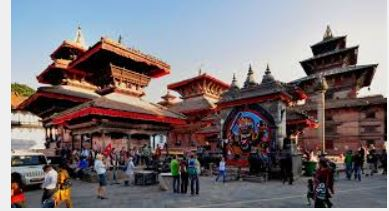

HISTORICAL
PEACEFUL E-Library for the
NEPAL Nepali Students
E-LIBRARY
HISTORICAL
PEACEFUL
E-Library for the
NEPAL Nepali Students
E-LIBRARY
⚲
Home
Historical Thinking
Browse History
About

 Kathmandu Durbar Square, also known as Basantapur Durbar and Hanuman Dhoka, is an old durbar square in Kathmandu's city center. In the heart of old Kathmandu city, Basantapur never fails to impress first time visitors with its intricate wood carvings and rich history. Hanuman Dhoka was built during the Licchavi period (4th to 8th centuries AD), and King Pratap Malla extended the property significantly in the 17th century. With the highest concentration of old structures, the square is home to several palaces, courtyards, and temples. It is also known as "the Museum of Temples" because there are over 50 temples in the square. Handicraft shops may be found in the courtyards around Gaddi Baithak, where you can see a variety of attractive purchasable handicrafts. Among the 50 temples that lie in the vicinity, lies the temple of the titular deity, Taleju Bhawani. The Durbar is divided into two courtyards, the outer Kasthamandap, Kumari Ghar, and Shiva-Parvati Temple, and the inner section consisting of Hanuman Dhoka and the main palace. Some floors have been converted to museums dedicated to three generations of Shah kings of Nepal. Most parts of the palace premises are open to tourists throughout the week.